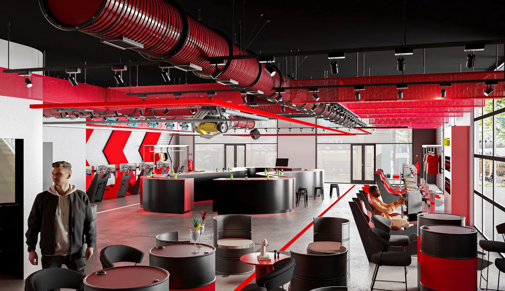
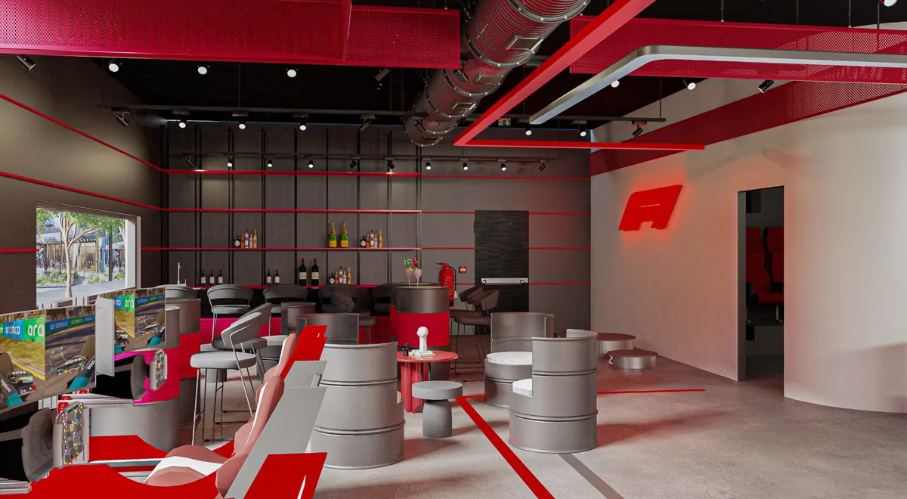
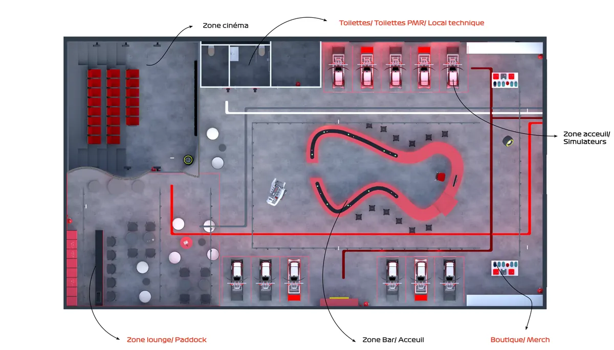
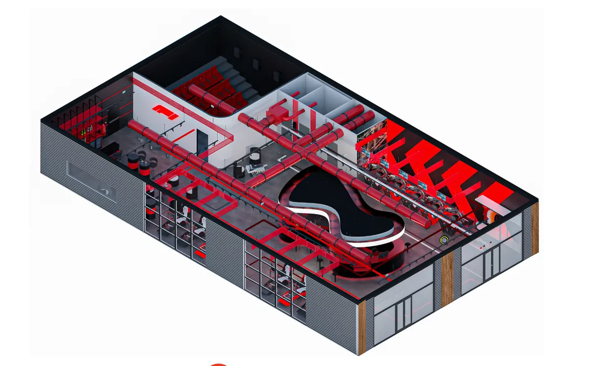
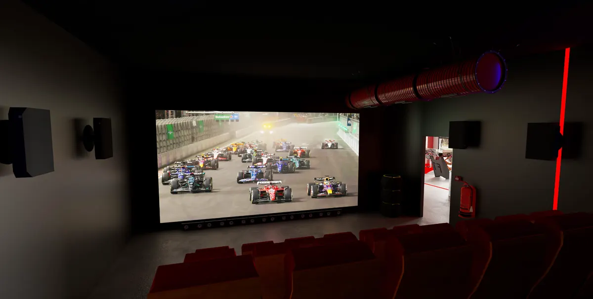
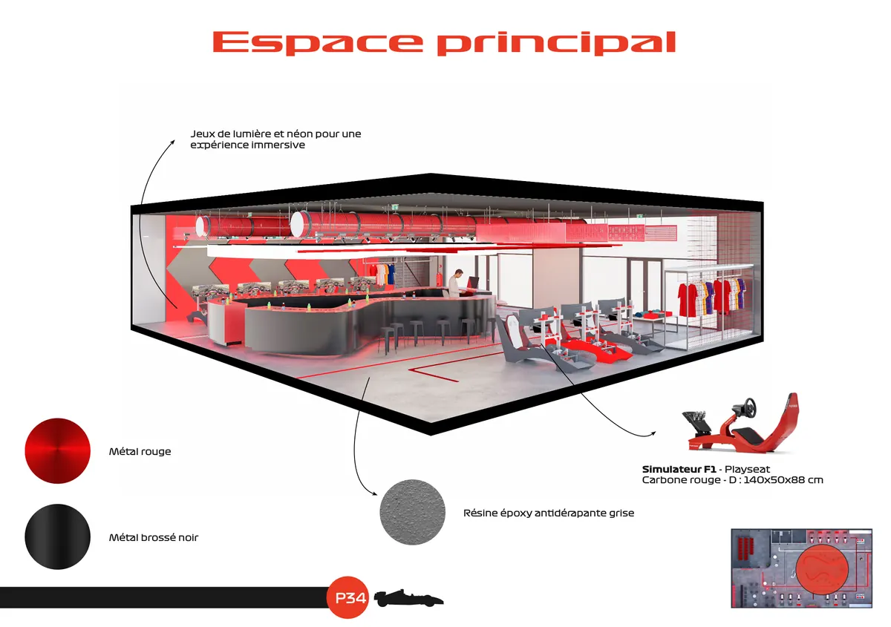
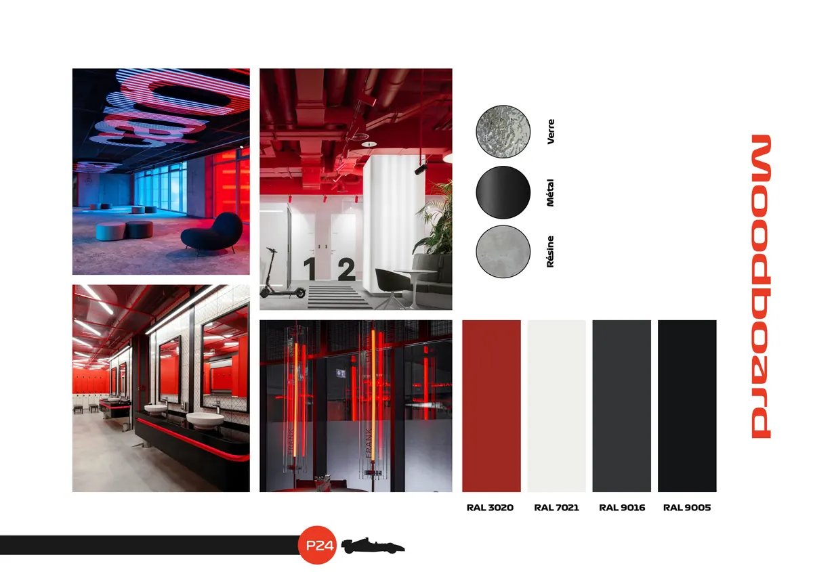

APEX
Un club Formule 1 à Vénissieux : piloter, regarder les Grands Prix, puis partager un verre, dans un lieu pensé comme un paddock.
« Un lieu pour vivre la passion pleinement. »
Depuis l'enfance, la fascination pour l'automobile : la précision mécanique, la vitesse, la liberté. Il y a sept ans, la découverte de la F1 amplifie tout : la technologie, la compétition, le travail d'équipe derrière chaque victoire.
Il manquait un endroit pour vivre cette passion avec d'autres. APEX réunit simulateurs, diffusion des Grands Prix, cinéma, bar et paddock.
L'apex, c'est le point de corde : l'endroit exact où le pilote frôle l'intérieur du virage avant de réaccélérer.
Architecture de marque
APEX devient la marque ; « Drive & Drink » reste la signature du concept : piloter, puis partager un verre. Quatre lettres, une syllabe, lisibles de loin et comprises partout.
Typographie : Archivo Expanded pour les titres et les chiffres, comme des numéros de course ; Inter Tight pour le texte.
Couleurs · charte RAL

APEX Pit Bar : le bar central en forme de circuit
Au cœur d'un écosystème automobile.
Un ancien local de 350 m² à Vénissieux, dans une zone industrielle et commerciale en mutation, transformé en club F1.
- AccèsProche du périphérique lyonnais
- VoisinageConcessions automobiles et motos
- ClientèleDiverse, entre fans et curieux
- LoyersPlus abordables que Bellecour ou Part-Dieu
- StructureDalle BA, acier et BBM
Personas
Clément, 25 ans
Fan absolu, il suit chaque Grand Prix et connaît les statistiques des pilotes. Il vient vibrer avec d'autres passionnés, entre simulateur et live.
Jeanne, 22 ans
Pas experte, partante pour une soirée entre amis. Elle découvre la F1 de façon accessible et veut essayer le simulateur.
Stéphane, 52 ans
Il fréquente les concessions des environs et fait le détour pour rencontrer des passionnés et regarder les courses.
Un plan qui se lit comme un tracé.
Le bar central en forme de circuit organise tout le plan. Les simulateurs longent les façades, le lounge paddock et le cinéma occupent le fond du local. Cloisons courbes, bandes vibreur au sol et néons dessinent les trajectoires.
Les flux clients, personnel et livraisons sont séparés ; sanitaires, PMR et local technique sont regroupés en fond de parcelle.


Néons, métal et nuit de course.
Des lignes lumineuses rythment l'espace comme une piste de nuit ; le rouge signal marque le bar, les simulateurs et la signalétique. Le paddock ralentit le tempo avec la tôle perforée, le métal brossé et des assises basses. Le cinéma passe au noir pour les Grands Prix.
- APEX Pit Bar & SimSimulateurs Playseat carbone rouge, bar circuit
- APEX PaddockLounge : tabourets NENA (Zanotta), tables Francis (Lema)
- APEX GridCinéma en gradins, moquette noire, LED 150 lux


Quatre ouvrages dessinés pour le lieu.
Du bar central à l'estrade du cinéma, chaque pièce est conçue et détaillée au 1/25, avec une matériauthèque resserrée en écho à la charte.
- Bar central circuitContreplaqué marine 18 mm, MDF cintrable, métal rouge et brossé noir
- Bar loungeStructure métal noir, étagères en tôle perforée rouge
- Vitrine casquesCaisson laqué rouge, niches éclairées, enseigne en relief
- Estrade cinémaOssature bois massif, contreplaqué antidérapant 22 mm


Projet suivant
Maison Isobathe
Boutique de plongée · Lyon 5e